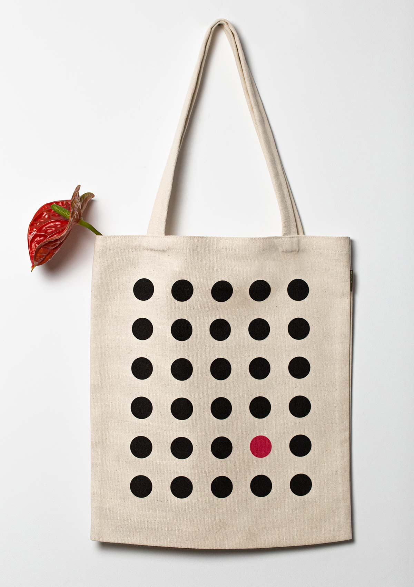
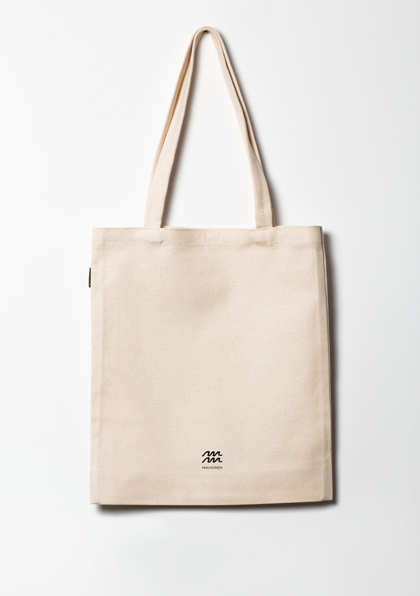
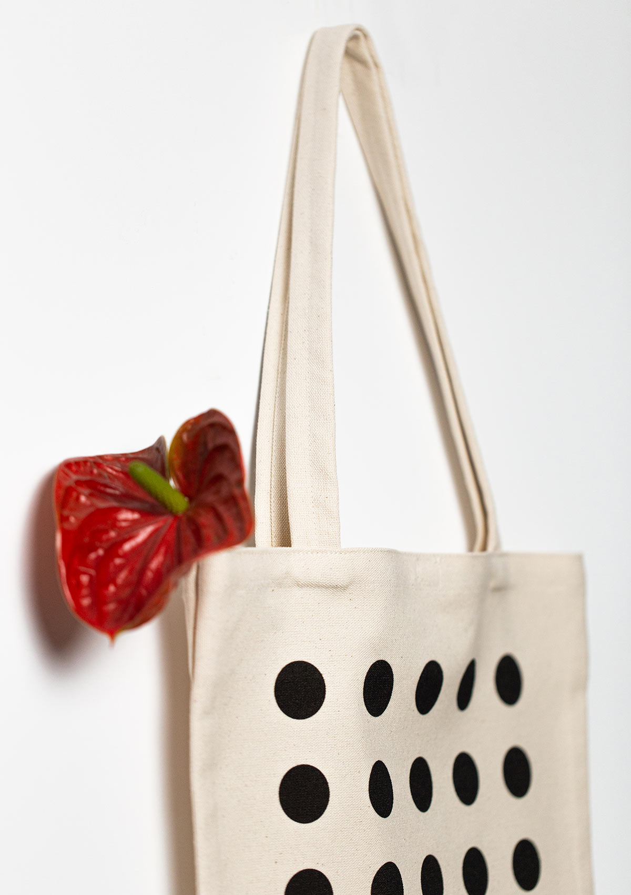

|  |  |  |
|
The cotton bag's simple design, which consists of big black dots set on a beige background and permanently
contrasted with a single deep red polka dot, will draw attention to it from any angle. The graphic on this
tote bag is created only using environmentally friendly inks on organic cotton. The model of this bag is
finished with a hedgehog-inspired closure for increased security. This purse complements both any casual
ensemble and the environment. |
|
| |
| |
| |
| 2024 Chillie Tote |